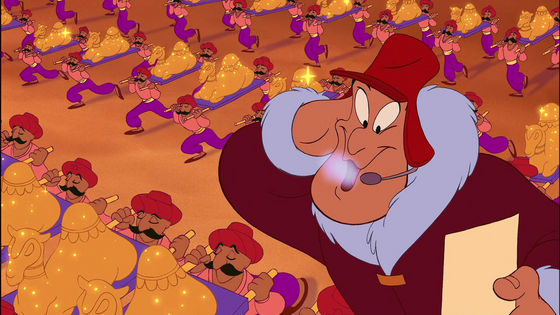

Timing
Timing involves a few simple principles: how quickly something moves and how long it stays still. Slowing something down in time adds weight, gravity, and mass. Speeding something up adds a sense of speed, lightness, and energy.
There are many ways to apply these principles to our work, but probably the simplest way to describe it is to go over my process when I started a piece of 2D animation done with pencil and hole-punched paper.
If it’s a heavy body mechanics shot, I might look to YouTube for live action clips that feature some of what I’m trying to do. If it’s an acting shot with a voice track, I’ll look at live action reference of the voice actor—or another actor whose physicality matches what I think the shot needs—and try to decide how I want to portray the action.